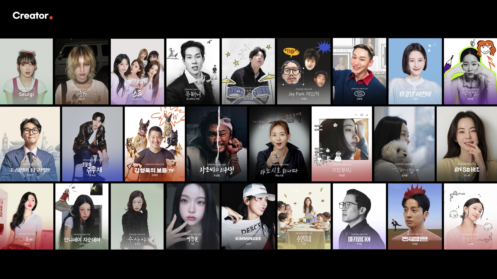
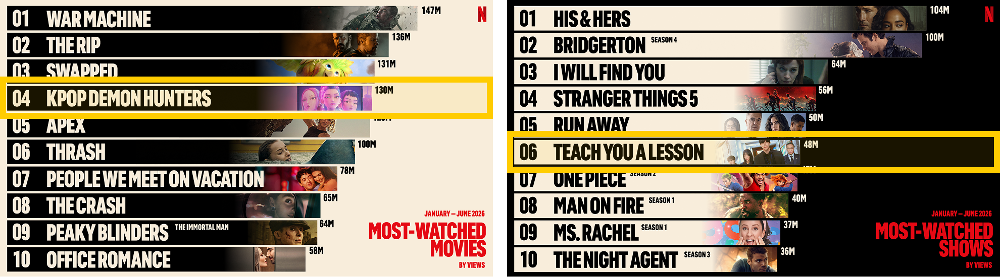

그룹 주얼리 출신의 서인영이 10여 년의 공백을 깨고 선택한 복귀 무대는 TV가 아닌 개인 유튜브 채널(<개과천선 서인영>)이었다. 대중의 니즈를 꿰뚫는 기획으로 단숨에 약 85만 구독자를 확보한 이 사례는
유튜브가 셀럽의 성공적인 재기 발판이 될 수 있음을 증명했다.
이러한 흐름은 서인영의 채널에만 국한되지 않는다. 공부 콘텐츠로 이 시장의 포문을 연 <공부왕 찐천재 홍진경>을 필두로 한가인, 이민정, 이미숙, 고현정 등 오랫동안 신비주의를 고수했던 여배우들이 연이어 유튜브에 진출하고 있다. 이들은 ‘정제된 방송 이미지’를 과감히 탈피하고 ‘날것의 진정성’을 무기로 대중과 직접 소통하며 팬덤을 형성하고 있다.
과거 방송사는 스타를 대중에게 선보이는 '게이트키퍼' 역할을 독점했다. 그러나 이제 셀럽들은 자신의 개성과 세계관, 팬덤을 직접 소유하고 운용하는 독립 브랜드, 즉 ‘셀럽 IP(Celebrity Intellectual Property)’의 시대를 열어가고 있다. 기존 방송 프로그램이 검증된 포맷 안에서 정형화된 역할을 요구했다면, 유튜브에서는 셀럽이 직접 연출과 이미지를 통제하며 방송에서 보여주지 못했던 재능과 역량을 자유롭게 실험할 수 있다.
이러한 흐름 속에 미디어 플랫폼 간 IP의 이동은 양방향으로 일어난다. ENA의 <쯔양몇끼>나 OTT 예능 제작에 나선 유튜버 빠니보틀처럼 레거시 미디어는 인기 유튜버의 굳건한 팬덤을 시청자 유입의 안전망으로 활용한다.
동시에 톱스타들의 콘텐츠 홍보 방식도 달라졌다. BTS는 컴백 후 기안84의 <인생84>, 정재형의 <요정식탁> 등을 최우선 홍보 창구로 택했으며, 영화 <군체>의 주연 배우들 역시 <와글와글>, <핑계고>와 같은 웹예능에 등장했다.
더 나아가 글로벌 미디어 플랫폼이 발굴한 인물들이 개인 유튜브로 진출해 독자적인 IP를 구축하는 사례도 등장하고 있다. 넷플릭스 요리 서바이벌 <흑백요리사: 요리 계급전쟁>에 출연한 셰프들이 뭉친 웹예능 <요리하는 할배들>은 시청자들의 호평 속에 시즌제 제작까지 확정지었다.
OTT 플랫폼이 조명한 셀럽 IP가 유튜브 생태계로 성공적으로 이식된 사례다.
이러한 생태계 전환 이면에는 기획력과 비즈니스 역량을 갖춘 전문 제작사들이 있다. ‘스튜디오 에피소드’는 <조승연의 탐구생활>, <오늘의 주우재>, <강형욱의 보듬TV> 등을 운영하며, 콘텐츠 IP와 커머스를 결합하는 비즈니스 모델을 성공적으로 안착시켰다. 이들은 뷰티 브랜드 ‘넛세린’과 패션 브랜드 ‘아이헤이트먼데이’ 등으로 사업 영역을 확장했으며, 유튜브 채널 <투머치 김호영>과 디자이너 양말 브랜드 아이헤이트먼데이의 협업을 통해 판매된 기획 상품은 완판 행렬을 이어가는 등 종합 IP 기업 체계로 올라섰다. 그런가 하면 ‘크리에이티브 비범’은 레거시 미디어에서 축적한 방송 제작 노하우를 셀럽 IP 기획에 접목해, 개별 셀럽의 ‘독립 레이블화’를 이끌어가고 있다. 전문 제작 인력이 이제는 셀럽 IP 스튜디오 비즈니스에 직접 뛰어들며, 미디어 생태계의 패러다임 전환을 선도하고 있다.

[그림 1] ‘스튜디오 에피소드’에서 제작 및 운영 중인 셀럽 IP 이미지
(출처: ‘스튜디오 에피소드’ 홈페이지 화면 캡처)

[그림 2] ‘크리에이티브 비범’에서 제작 및 운영 중인 셀럽 IP 채널 이미지
(출처: ‘크리에이티브 비범’ 홈페이지 캡처)
해외 미디어 시장 역시 셀럽 IP가 주도하고 있다. 배우 라이언 레이놀즈(Ryan Reynolds)는 주류 브랜드 ‘에비에이션 진’과 통신사 ‘민트 모바일’ 두 브랜드의 매각만으로 약 2조 원 가치에 달하는 경제적 가치를 창출했다.
이는 중개 플랫폼의 개입 없이도, 셀럽의 고유한 개성과 팬덤이 거대한 상업적 가치로 직결될 수 있음을 보여준 사례이다. 세계 1위 유튜버 미스터비스트(MrBeast)가 론칭한 초콜릿 브랜드 ‘피스터블(Feastables)’이 단기간에 수천만 달러의 매출을 기록하며 월마트 진열대를 점령한 것
역시 같은 맥락이다.
한편 방송의 공공성이 강한 유럽 시장에서도 레거시 미디어가 셀럽 IP의 파급력을 적극적으로 흡수하려는 ‘하이브리드 협업’ 모델이 시도되고 있다. 영국 공영방송 채널4는 크리에이터 전담 브랜드 ‘Channel 4.0’을 출범시켜, 신규 시청자 유입의 80% 이상을 젊은 세대로 채우는 성과를 거두었다.
레거시 미디어의 광고 매출은 급감하는 반면, 크리에이터 이코노미는 연평균 20%를 넘는 속도로 팽창하고 있다.
비즈니스 모델이 광고 수익에서 커머스 및 IP 라이선싱으로 다각화되는 현상은 불가역적 흐름이다. 그러나 이 생태계가 지속 가능하기 위해서는 해결해야 할 과제들이 존재한다.
우선, 특정 인물에 의존하는 휴먼 리스크를 분산하기 위해 셀럽 개인에게서 독립된 브랜드 IP의 육성이 필요하다. 또한 단기적 수익 창출을 위한 과도한 상업화는 팬덤의 신뢰를 훼손하여 결과적으로 셀럽 IP의 가치를 약화시킬 위험이 있다. 또한 셀럽 채널이 사실상 C2C 플랫폼으로 기능함에도, 과장 광고나 품질 불량, 환불 분쟁 발생 시 소비자를 구제할 제도적 안전망이 부족하다. 현행 방송법 등 관련 규제가 여전히 ‘채널 사업자’ 중심의 규율 체계에 머물러 있기 때문이다.
특히 알고리즘의 불투명성은 뒷광고나 불량 제품 확산 사태처럼 소비자 피해를 증폭시키는 핵심 요인이다. 소비자는 해당 콘텐츠가 상업적 계약에 따른 추천인지, 혹은 알고리즘에 의해 인위적으로 노출된 것인지 명확히 인지하기 어렵다. 알고리즘에 따라 특정 콘텐츠가 편향적으로 노출되더라도 대중에게는 친근한 일상 공유로 보이기 쉬우며, 이에 따라 맹목적인 신뢰가 소비자의 피해나 건강상 위협으로 이어지기도 했다.
결론적으로, 셀럽 IP 기반의 크리에이터 경제가 지속적으로 성장하기 위해서는 플랫폼 알고리즘의 투명성을 제고하고, 융합된 미디어 커머스 환경 속에서 소비자를 보호할 수 있는 실효성 있는 제도적 장치를 마련하는 것이 시급하다.
- 고가혜(2026.5.17.). 유튜브로 간 연예인, TV로 간 유튜버…경계 허물어진 플랫폼. <연합뉴스>.
- 방은주(2026.1.22.). 캐리소프트, 스튜디오에피소드 인수…'종합 콘텐츠 기업 도약'. <ZDNet Korea>.
- 서지민(2026.6.5.). 스튜디오 에피소드, 미디어 커머스 새 공식 썼다. <머니투데이>.
- 송오정(2026.4.3.). 서인영, 유튜브 복귀 화제→실버버튼 달성. <스포츠투데이>.
- 블로터(2026.4.15.). [K콘텐츠 IP] 에피소드컴퍼니, '글로벌 IP 공룡' 도전 성공할까. <블로터>.
- 미뮤엔토(2026.4.15.). 흑백요리사 그 이후, <요리하는 할배들>.
- 인크로스(2025.8월). 콘텐츠와 크리에이터 중심으로 재편되는 디지털 광고의 미래. 2025년 8월 마켓 인사이트 리포트.
- 일간스포츠(2026.3.27.). [단독] 흑백 셰프, 여행 예능 나왔다…'요리하는 할배들' 4월 공개.
- Clark, E.(2025.3.13.). MrBeast’s chocolate empire is making more money than his YouTube channel. Fast Company.
- Clover, J.(2025.2.12.). Channel 4 social audiences receive YouTube boost. Broadband TV News.
- Creator Economy Market Summary(2026 – 2033). Grand View Research.
- Picchi, A.(2023.3.17.). Ryan Reynolds could make $300 million from Mint Mobile sale. CBS News.
- Precedence Research(2026). Creator Economy Market Size, Share & Growth Report 2035.